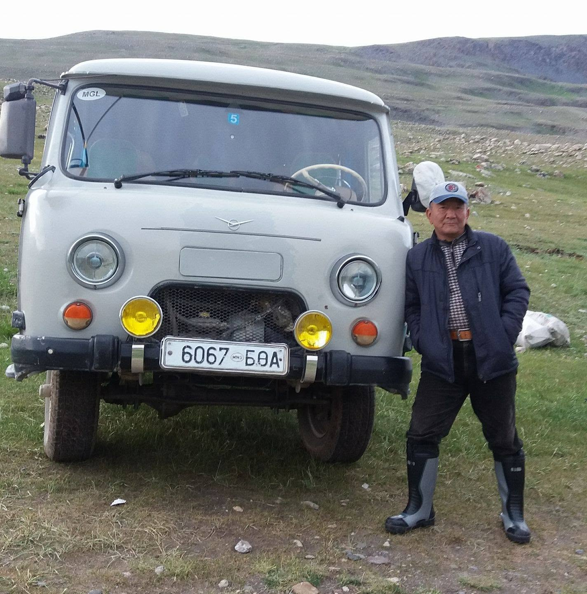
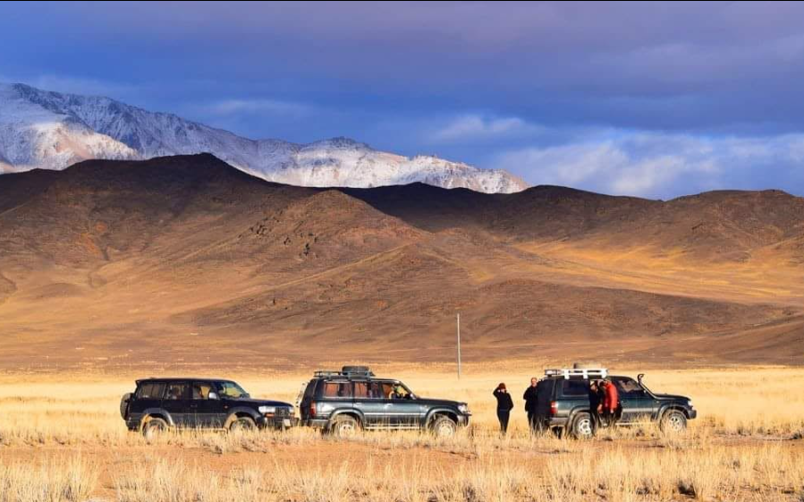
Аяллын жолооч · Нутгийн зам
Konay Amca
Аялал жуулчлалын 15 жилийн жолоочийн туршлагатай. Нутгийн зам, уулын маршрут, замын нөхцөлийг сайн мэднэ.
FacebookАлтайн нутгийн мэдлэг, Казахын өв уламжлал, зочломтгой занг бодит туршлагаар хүргэх хүмүүс.


Аялал жуулчлалын 15 жилийн жолоочийн туршлагатай. Нутгийн зам, уулын маршрут, замын нөхцөлийг сайн мэднэ.
Facebook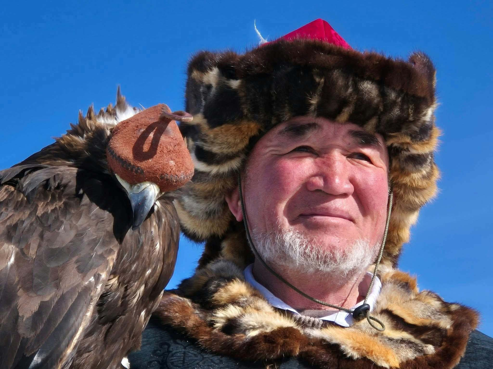
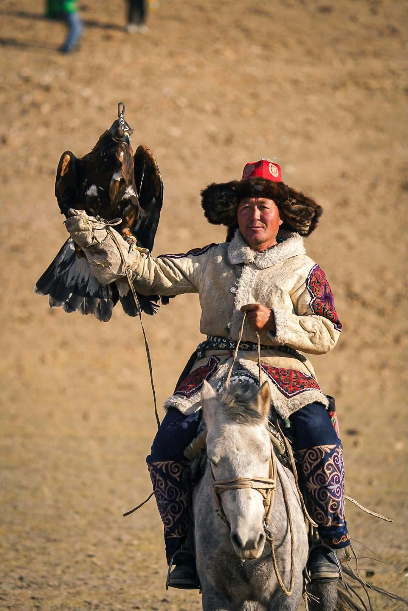
Танигдсан бүргэдчин бөгөөд Казахын бүргэдээр ан хийх уламжлал, гэр бүлийн өвийг зочдод танилцуулна.
Facebook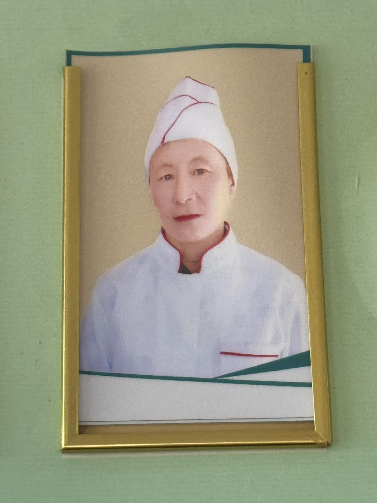
Амттай уламжлалт Казах хоол бэлтгэдэг мэргэжлийн тогооч. Зочдод нутгийн хоолны соёл, гэрийн амтыг мэдрүүлнэ.
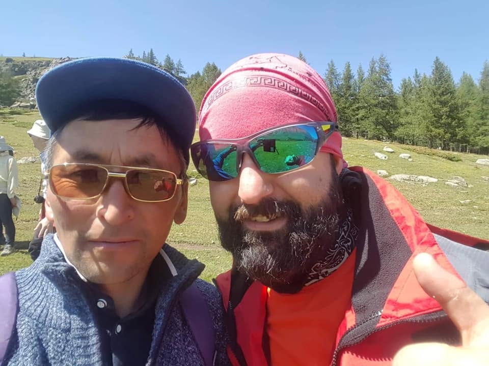
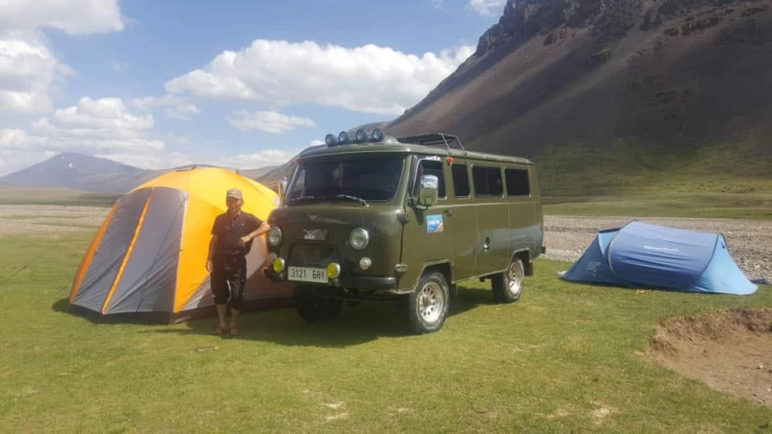
Туршлагатай бүргэдчин, аяллын салбарт ажилласан жолооч. Нутгийн уламжлал, амьдралыг зочдод бодитоор танилцуулна.
FacebookНутгийн амьдрал, аяллын бодит туршлагыг хуваалцаж, Алтайг илүү ойроос танин мэдэхэд тусална.
FacebookНутгийн хүмүүс, орчин, аяллын туршлагыг танилцуулж, Баян-Өлгийн жинхэнэ уур амьсгалыг мэдрүүлэхэд тусална.
Facebook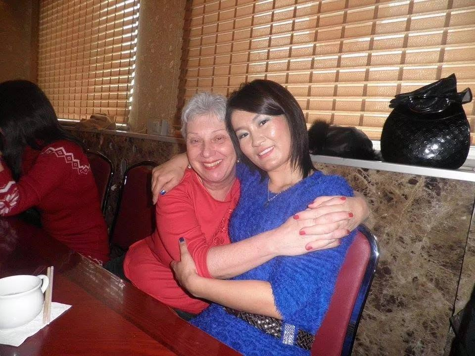
10 жилийн мэргэжлийн хөтөчийн туршлагатай. Аяллын хөтөлбөр, нутгийн түүх, зочдын хэрэгцээг уялдуулан ажиллана.
Facebook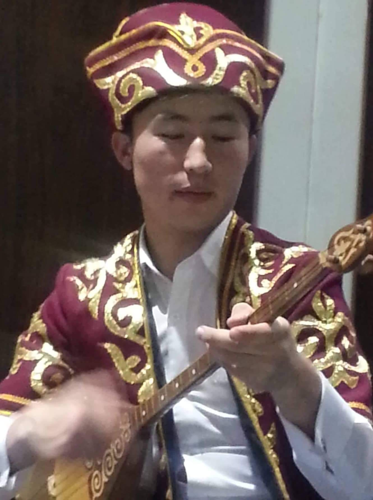
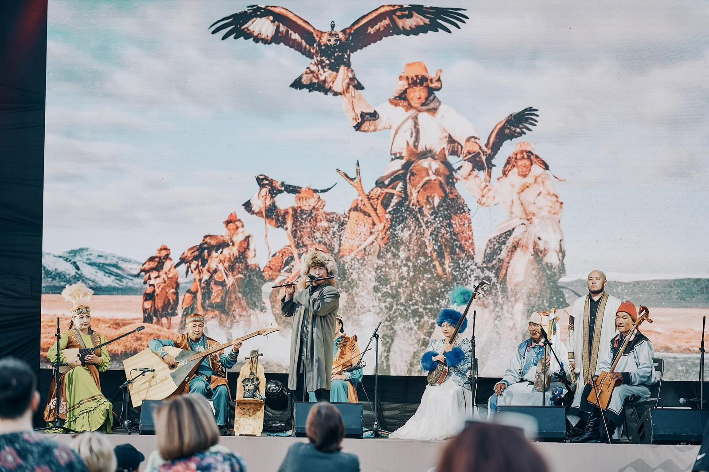
Домбра болон уламжлалт хөгжмийн үзүүлбэрээр дамжуулан Казахын соёл, урлагийг зочдод хүргэдэг уран бүтээлч.
FacebookТуршлагатай багийн хамт аяллын бодит туршлагаа нэмэгдүүлж байна.
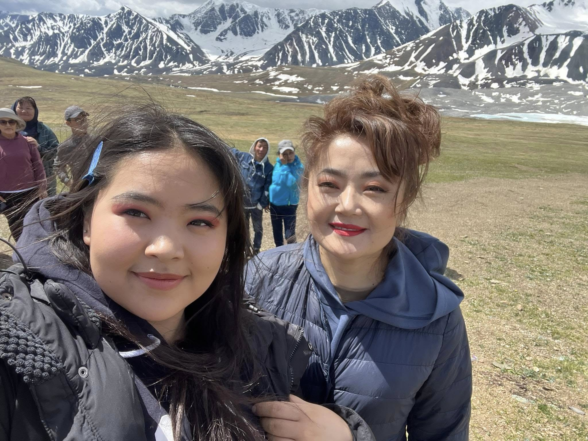
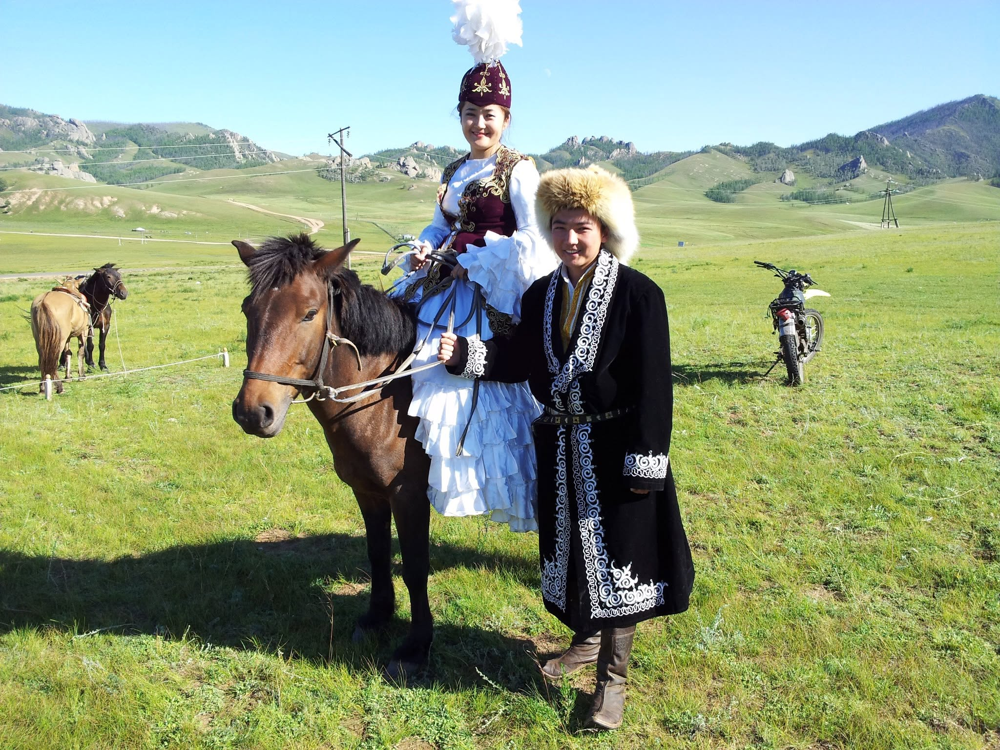
Англи хэлний маш сайн чадвартай. Олон улсын зочидтой харилцах, хөтөчийн бодит туршлагаа нэмэгдүүлэх чиглэлээр хөгжиж байна.
Англи хэлний маш сайн чадвартай. Зочидтой харилцах, нутгийн соёлыг тайлбарлах болон хөтөчийн туршлагаа нэмэгдүүлж байна.